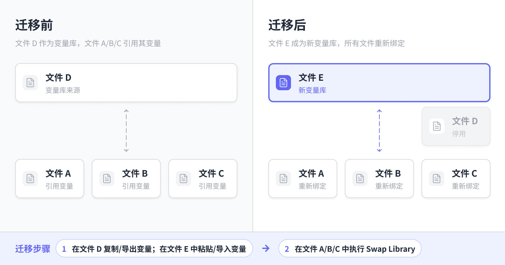

Figma 跨文件迁移变量的方式
如果文件 A、B、C 都用了文件 D 的变量，现在想把文件 D 的变量独立到文件 E 中，让文件 A、B、C 以及将来的新文件都用文件 E 中的变量，如何操作？

第一步：将变量迁移到文件 E
方式1：复制、粘贴
这是 Figma 原生功能，但有限制，复制粘贴变量不会保留分组结构，需要手动重建。适合无分组的变量迁移。
- 打开文件 D，进入变量集合
- 全选变量 → 右键
Copy - 打开文件 E，创建同名的变量集合
- 右键
Paste，将变量粘贴进来 - 将文件 E 发布为共享库
方式2：导出、导入
Figma 原生功能，也有限制，导出的文件是按 mode 拆分的，适合有分组且只有一个 mode 的变量迁移。
- 打开文件 D，进入变量集合
- 选择变量集合 → 右键
Export modes - 解压导出的变量 json 文件
- 打开文件 E，创建同名的变量集合
- 点击
Import，将变量文件导入进来 - 将文件 E 发布为共享库
方式3：用插件
最完整的迁移方案，适合含分组、多集合、多 Mode 的变量。可尝试的社区插件：
- Variables Import Export
- Token Flow
- Tokens Studio
这类插件可以导出包含完整结构的 JSON，再导入到文件 E。
第二步：在文件 A、B、C 中替换库引用（Swap Library）
对每个消费文件（A、B、C）分别执行：
- 打开该文件，点击
Assets面板 - 点击右上角
Libraries - 找到文件 D 的库，点击进入详情页
- 点击右下角
Swap library，选择文件 E 作为替换目标 - Figma 会自动按名称匹配变量，确认映射关系后点击
Swap library
关键注意事项
- 变量名称必须一致：Swap Library 是按名称匹配的，文件 E 中的变量名要和文件 D 完全相同，否则无法自动映射
- 集合名称也要一致：集合名不同会导致匹配失败
- 逐文件操作：每个消费文件都需要单独执行 Swap Library
- 迁移完成后：可以停用或删除文件 D 的变量库，新文件直接订阅文件 E 的库即可
发布于:
2026/6/11